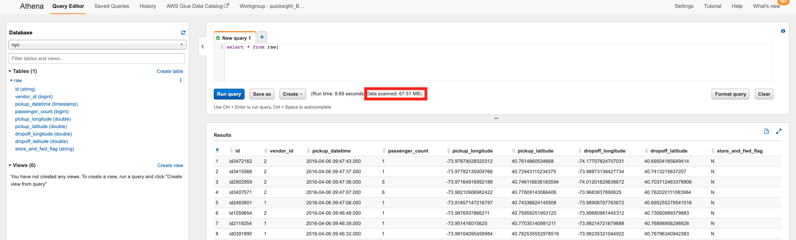
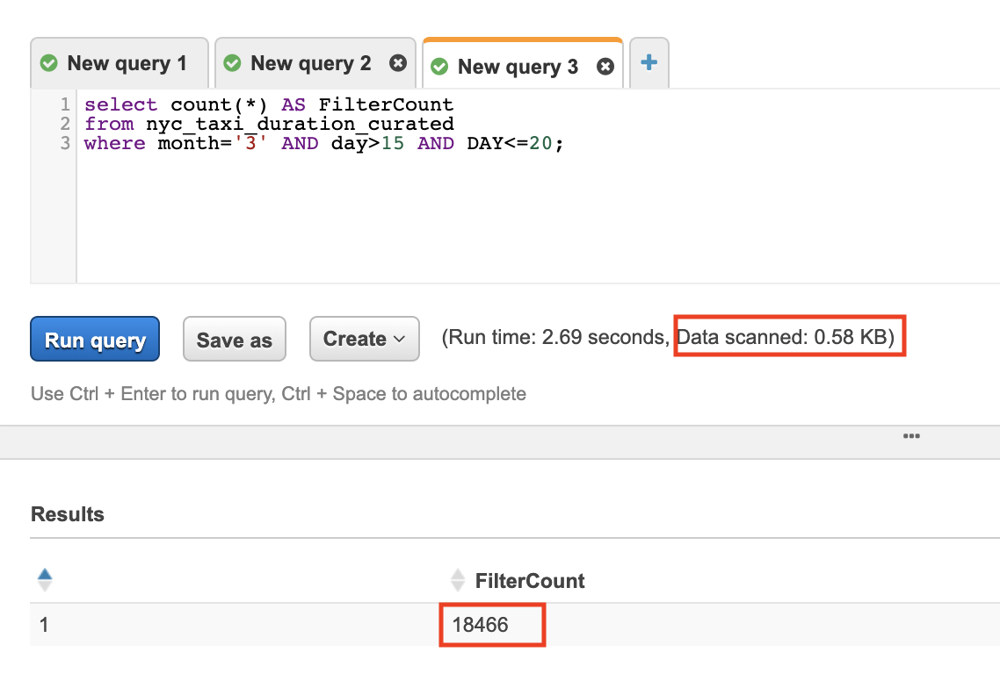
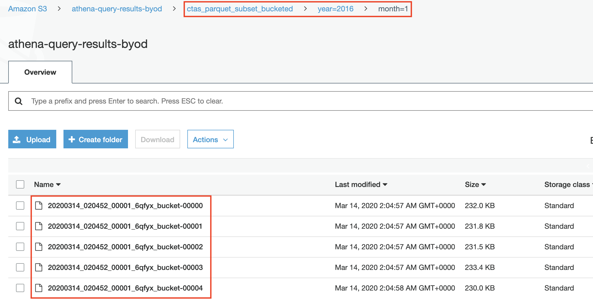

Optional - Amazon Athena Best Practices
Introduction
In the first Lab (Lab 1: Ingestion with Glue) we did one transformation to the data; changed the format to parquet. Partitioning and bucketing are other common best practices. Partitioning, is a way to organizes tables into partitions by dividing tables into different parts based on partition keys. While Bucketing, buckets your data into groups within a single partition.
This lab discusses common best practices) that enable you to get the most out of Athena.
Before doing this let’s discuss how Athena pricing works. With Athena, you are charged for the number of bytes scanned by Amazon Athena, rounded up to the nearest megabyte, with a 10MB minimum per query. Thus, the aim is to run the query with least amount of data scanned.
We will run the same query before and after we do the optimisation to see how these recommendations significantly reduce the amount of data scanned, and thus, reducing cost and improving performance.
Using Columnar Storage
Apache Parquet is a popular columnar storage format that is optimised for fast retrieval of data and used in AWS analytical applications. Parquet and other popular columnar storage formats have three main benefits that make them suitable for using with Athena;
- Compression by column, and thus, better compression rate and lower storage cost.
- Predicate pushdown enables Athena queries to fetch only the blocks it needs, improving query performance. When an Athena query obtains specific column values from your data, it uses statistics from data block predicates, such as max/min values, to determine whether to read or skip the block.
- Splitting of data allows Athena to split the reading of data to multiple readers and increase parallelism during its query processing.
Now let’s compare the amount of data scanned when we run the same query on the raw and curated tables
- Open the AWS Management Console for Athena and make sure you are on the same AWS Region.
- Choose the {raw database} from the dropdown menu and execute the following query:
SELECT * FROM {raw_table_name}
-
Wait the query to execute and note the amount of Data scanned by the query. 
-
Let’s run the same query on the optimised data to compare the difference. Choose the {curated database} from the dropdown menu and execute the same query with the new {curated_table_name}.
-
Wait for the query to execute the note the amount of Data Scanned

You noticed in this lab by converting to Columnar storage format, you significantly reduced the amount of data scanned, and thus, reducing Athena costs and improving performance.
Partitioning your Data
By partitioning your data, you can restrict the amount of data scanned by each query, thus improving performance and reducing cost. Athena leverages Hive for partitioning data. You can partition your data by any key. A common practice is to partition the data based on time, often leading to a multi-level partitioning scheme.
To see the benefit of partitioning, let’s run the same query on the raw (non partitioned) and curated (partitioned). This time the query should filter the results using the WHERE clause in the SQL statement. The aim is use the column used to partition the data to filter the results.
- Open the AWS Management Console for Athena and make sure you are on the same AWS Region.
- Choose the {raw database} from the dropdown menu and execute the following query:
SELECT count(*) AS FilterCount
from {raw_table_name}
where {condition_on_partitioned_column}
-
Wait the query to execute and note the amount of Data scanned by the query.

-
Let’s run the same query on the optimised data to compare the difference. Choose the {curated database} from the dropdown menu and execute the same query with the new {table_name_curated}.
-
Wait for the query to execute the note the amount of Data Scanned 
You learnt in this lab that if you have many queries that are filtered in the WHERE clause, then the column used to filter the query result would be a good partitioning candidate. By partitioning your data you will significantly reduce the amount of data scanned, and thus, reducing Athena costs and improving performance.
Bucketing your Data
An additional optimisation supported by Athena is bucketing. Partitioning is used to group similar types of data based on a specific column. Bucketing is commonly used to combine data within a partition into a number of equal groups, or files. Therefore, partitioning is best suited for low cardinality columns and bucketing is best suited for high cardinality columns.
Bucketing your data, is another common technique that improves Athena performance and cost. For more information, see Bucketing vs Partitioning.
You can use CREATE TABLE AS SELECY(CTAS) query to bucket the data within a partition. This lab, we will cover, how to use CTAS to physically create a subset table. Two identical subset tables will be created; the first one is partitioned and the second one is bucketed and partitioned. Finally, we will run the same query on both subset tables and compare the results.
Note: This lab will run on the Curated Table
What is ‘CREATE TABLE AS SELECT’
[OPTIONAL]
A CREATE TABLE AS SELECT (CTAS) query creates a new table in Athena from the results of a SELECT statement from another query. Athena stores data files created by the CTAS statement in a specified location in Amazon S3
Note: You not need to create the S3 folder before running the CTAS query; Athena will do it for you. Just choose the S3 path to store the data. Feel free to use any path as long as you own the S3 bucket and it is in the same region you are using throughout this lab. If you choose to create the folder before running the query, make sure the folder is empty otherwise the query will fail.
Use CTAS queries to:
- Create tables from query results in one step, without repeatedly querying raw data sets. This is useful if you want to create a new table from the results of joining two tables.
- Transform query results into other storage formats, such as Parquet and ORC. This improves query performance and reduces query costs in Athena.
- Create copies of existing tables that contain only the data (subset of the table) you need.
- Bucketing and/or partitioning your data.
Using CTAS to create Partitioned Subset
- Open the AWS Management Console for Athena and make sure you are on the same AWS Region.
- Choose the {curated database} from the dropdown menu and execute the following query:
CREATE TABLE subset
WITH (
format = 'PARQUET',
external_location = 's3://{athena-s3-bucket}/{first_subset}/',
partitioned_by = ARRAY['{col1}','{col2}', etc ...],
)
AS SELECT *
FROM {curated_table_name}
where {CTAS_condition}

- Navigate to S3 and check the newly created files

Using CTAS to create Partitioned and Bucketed Subset
- Choose the {curated database} from the dropdown menu and execute the following query:
CREATE TABLE subset_bucketed
WITH (
format = 'PARQUET',
external_location = 's3://{athena-s3-bucket}/{first_subset}/',
partitioned_by = ARRAY['{col1}','{col2}',etc..],
bucketed_by = ARRAY['{primary_key}'],
bucket_count = 5)
AS SELECT *
FROM {curated_table_name}
WHERE {CTAS_condition}
- Navigate to S3 and check the newly created files. Notice that data within one partition is bucketed into 5 (configured in the CTAS query) different files 
Comparing Results
Note: {primary_key} here should be the column used for bucketing. Columns with high cardinality (high number or unique values) that are spread evenly are good candidates for bucketing.
- In Athena Console, execute the following query on the new table (subset)
AS SELECT *
FROM subset
WHERE {primary_key} = {value}
-
Wait for the query to finish and note the amount of data scanned by the query.

-
In the Query Editor, execute the following query on the new table (subset_bucketed)
AS SELECT *
FROM subset_bucketed
WHERE {primary_key} = {value}
- Wait for the query to finish and note the amount of data scanned by the query.

In this lab we learnt that bucketing is also a very useful optimisation. Columns with high cardinality (high number of unique values) that are evenly spread are good candidates for bucketing. Bucketing distribute the data to different files within a partition. So if we want to filter a partition, Athena will only scan the relevant bucket files not the whole partition.